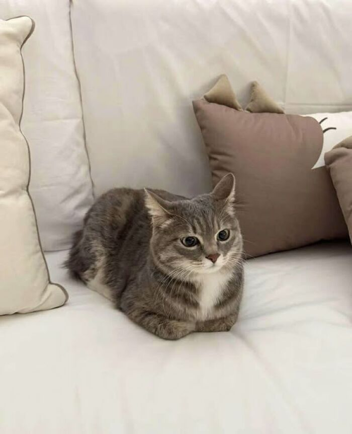
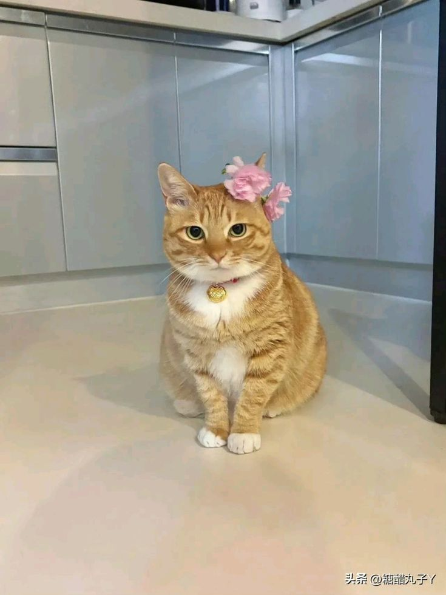

Полезные ссылки для любителей котиков
Для тех, кто хочет приютить котика или помочь бездомным животным:
Наши котики-бариста
Мурзик – главный бариста

Специализация: латте-арт и утренние капучино.
Комментарий: Мурзик работает с нами с самого открытия и знает всё о perfect espresso!
Барсик – мастер уюта
Специализация: создание комфортной атмосферы.
Комментарий: Барсик обожает спать на мягких подушках и мурлыкать для наших гостей.
Рыжик – встречает гостей
Специализация: гостеприимство и welcome-сервис.
Комментарий: Рыжик всегда первым бежит встречать посетителей и провожать их к столикам.
Наши котики проходят специальное обучение сервису и этикету, любят людей и с радостью позируют для фото.
Каждый из них имеет ветеринарный паспорт и регулярные осмотры у врача.
Снежок – котик месяца!

Достижения: получил рекордное количество ласки и угощений от гостей.
Особые навыки: идеально белая шерсть и невероятная фотогеничность.
Снежок – наш новый восходящий талант. Приходите познакомиться с ним лично!